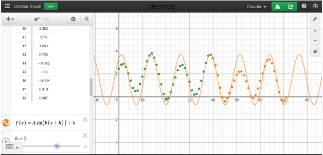

Data Projects
Data ProjectsTide Modeling
Problem
Given water depth data from a NOAA weather station, develop a sinusoidal model for predicting the tides.
Resources
Overview

Questions:
- What is the amplitude of your tide model? What does this tell us in the context of our problem?
- What are the period and frequency of your model? What do these tell us in the context of our problem?
- What water level does your model predict at 12:00am on Saturday (one week from the star of the data)?
- What water level does your model predict at 12:00am on the Saturday 8 weeks from the start? How reliable is this prediction?
- What are some reasons why the model does not perfectly fit the data?